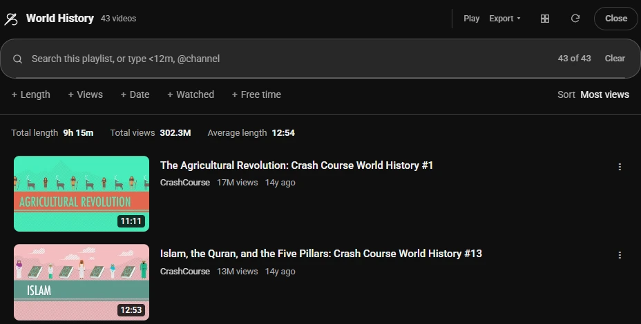

Guide 16·Playlists
How to sort any YouTube playlist by date, views or title.
Updated 19 November 2026
Short answer
On a playlist you made, use the sort menu above the list: date added, date published or most popular. A playlist someone else made has no sort at all, and no playlist on YouTube sorts by title. Needle, a free Chrome extension, sorts any playlist in its panel by upload date, views, length, channel or title A to Z, without changing the playlist.
01·On YouTube
What YouTube's sort can do
Only playlists you own have one. Open one of yours, or Watch Later, and the first chip above the list is a sort menu:

- Manual: your own order, by dragging.
- Date added, newest or oldest: when each one went into the list.
- Most popular: most views first.
- Date published, newest or oldest: when each video went up.
Picking one changes the playlist. The order is saved with it, so it opens and plays that way from then on. There's no sort by title, length or channel.
02·Other people's
Someone else's playlist
A playlist made by someone else, a course, a channel's series, a mix, has Play all and Shuffle and no sort. It plays in the order its owner set, and saving it to your library doesn't change that: it's still their list.
03·With Needle
Sort any playlist with Needle
- Open the playlist.
- Press the needle button in the bottom right corner, or Alt+Y. Needle reads every video in it.
- Open Sort and pick an order.

- List order and List order, reversed: the playlist as it runs, or turned round. Playing a playlist in reverse.
- Newest upload and Oldest upload: by when each video was posted.
- Most views and Fewest views.
- Longest and Shortest: sorting by length has more.
- Title A→Z: alphabetical.
- Channel A→Z: grouped by channel, alphabetically.
Nothing changes on YouTube. The order lives in the panel, and in what Play opens: what's showing, in that order, up to 50 videos.
04·How exact
How exact the dates are
Upload dates come from the age YouTube prints under each video, like 11 years ago, so videos posted the same year sort together and keep the playlist's own order between them. On Crash Course Astronomy, Oldest upload still runs episode 1, 2, 3, because that's how they sit in the list. Within the last year, ages are in months, weeks or days, and the order is close to exact.
05·By channel
By channel
A playlist built from many channels, a music mix, a collection of talks, your Watch Later, is easier to read grouped. Channel A→Z puts each channel's videos together, channels in alphabetical order, and within a channel keeps the order the playlist had. YouTube's sort menu has nothing like it, even on your own lists.
To keep only one channel instead, filter: type @name with the channel's name, or pick it under + Channel, which appears when a playlist has videos from several channels.
06·Combine it
Sort and filter together
<15m | Under 15 minutes, still in the order you picked |
>500k | Over 500K views |
after:2024 | Uploaded since the start of 2024 |
unwatched | Not started yet |
After one video rather than an order? Search inside the playlist.
07·Questions
Questions?
Can you sort someone else's YouTube playlist?
Not on YouTube. Their playlist page has Play all and Shuffle and no sort. Needle sorts any playlist in its panel, and Play plays it in that order.
Can you sort a YouTube playlist alphabetically?
Not on YouTube. Needle's sort menu has Title A→Z.
Can I sort a playlist by channel?
Yes, with Needle: Channel A→Z groups the videos by channel, alphabetically, and keeps the playlist's own order inside each. YouTube's sort has nothing like it. To see just one channel, type @ and its name instead.
Does sorting change my playlist?
YouTube's sort menu does: the order is saved with the list. Needle's doesn't: it only changes what its panel shows, and what Play opens.
How exact is sorting by upload date?
Needle goes by the age YouTube prints, like 3 years ago, so videos from the same year keep the playlist's own order between them. For a series uploaded in order, that's the right order anyway.
Does it work on Watch Later?
Yes, and on Liked videos, which YouTube can't sort at all. If the panel says First 100 only, press Read all first.
Is it free?
Yes. No account, no trial, no paid tier.